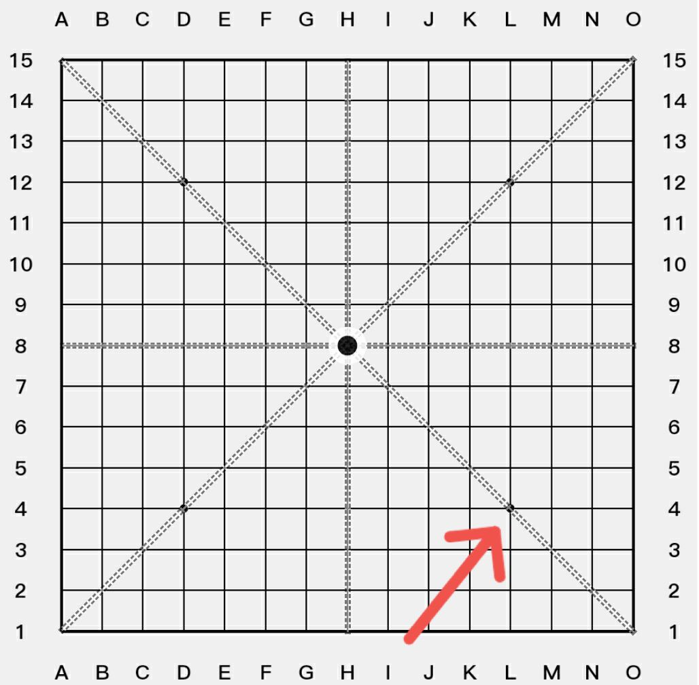
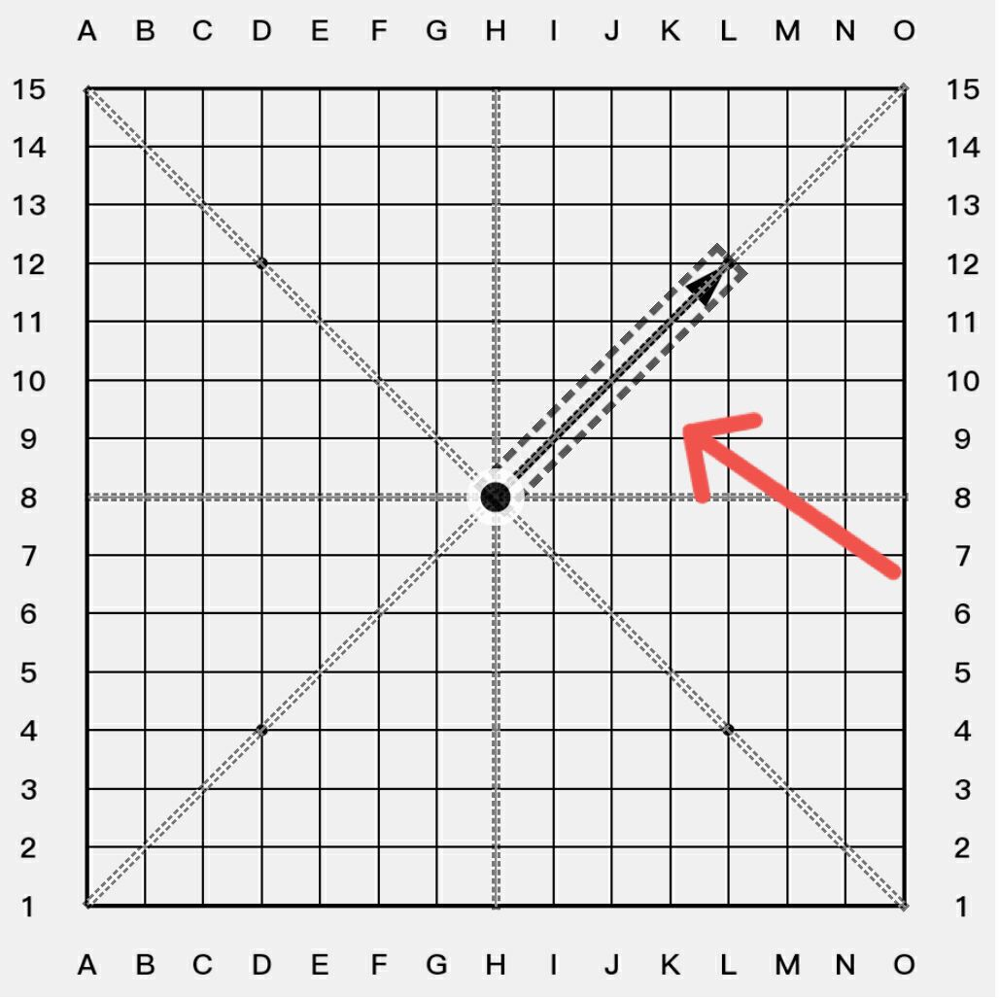
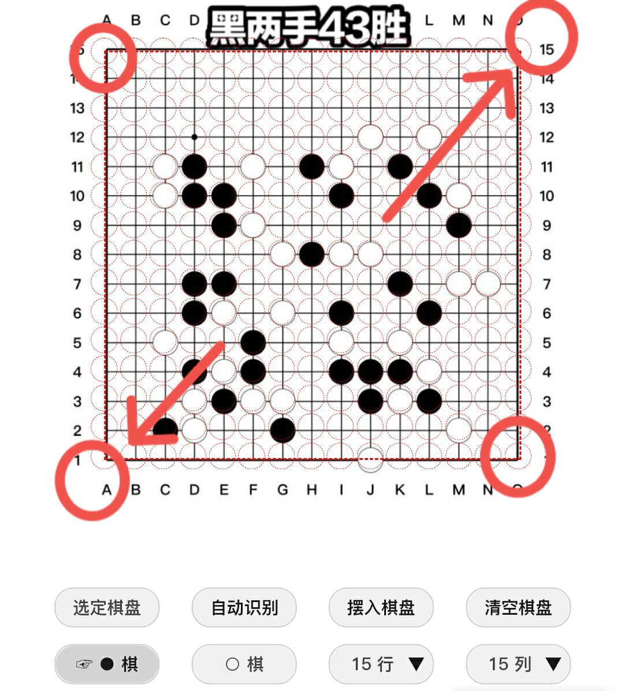
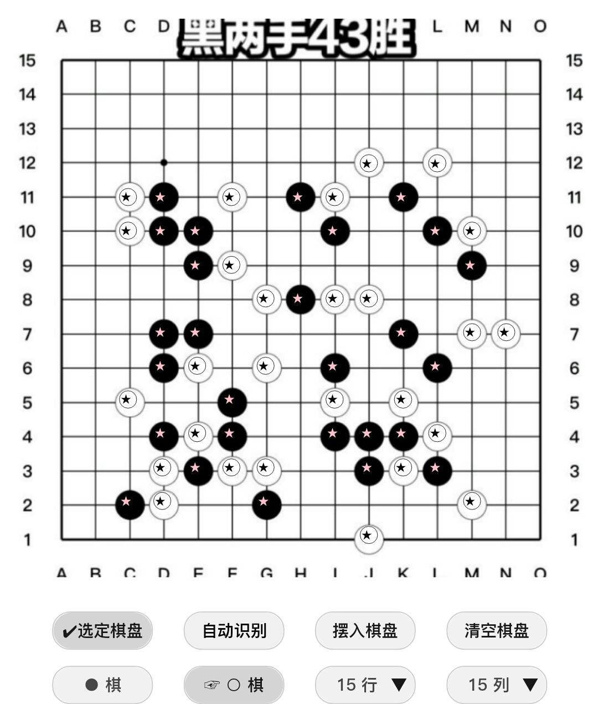

棋盘支持的操作
...
- 触摸操作方式
...
- 单击
...
- 添加棋子，标记...
- 点击棋子，标记 可以删除棋子，标记...
- 双击
- 长按
...
- 弹出菜单
- 触发拖动操作
- 更改最后一手棋的显示方式
- 拖动
- 键盘操作方式
...
- 左键单击 = 触摸单击
- 左键双击 = 触摸双击
- 右键单击 = 触摸长按
按钮功能的介绍
...
- 分享图片, 分享原图
可以利用浏览器的分享功能把棋盘图片分享到社交软件
- 清空标记
清除棋盘上面的标记
- 帮助
打开帮助文档
- ||<< , <<,>>, >>||
前进，后退按钮
- ❶
...
- 显示手数
- 显示禁手
- 显示线路
PS：显示活三，冲四的线路
- 新棋局
- ↔180°， ↗90°
翻转棋盘，会清除掉所有标记
- ←，→，↑，↓
移动棋盘，只会清除掉线段，箭头标记
- 黑先，白先
设置计算时的先手方
- 找点
- 解题
- ⇨VCF
切换VCF线路
- ◐
设置轮流添加棋子
- ●,○
单独添加棋子，没有手数
- ■, ◎, ▲, ✖,
设置添加的标记符号
- ←箭头...
添加更多的标记
...
- 箭头和线条标记
...
- 添加箭头，线条
...
- 点击棋盘交叉线，选择起点
- 在米字线与棋盘坐标交叉点上面点击，确认结束点

- 选择和删除
...
- 点击线条与棋盘坐标的交叉点，选择线条。有重合的优先选择最上层。
- 在选定的线条与棋盘坐标交叉点上面，点击删除。

PS：箭头标记, 字符标记，棋子，线条标记的图层关系是从上到下的关系，即箭头在最上层。在同一图层的标记当中，后添加的覆盖在上面。
- ABC...， abc...， 123...
连续输入字母，数字标记
- 自定义标记
连续输入编辑好的标记
- ❌, ☆
- 下手为❶
忽略前面的手数，下一手棋开始为第一手
- 重置手数
恢复最开始的手数
- 输入代码
输入棋局的代码，字母不分大小写。输入代码过程中，程序会自动过滤代码中的无意义字符。比如输入“五子棋h8五子棋h9五子棋” = “h8H9” = “H8H9”)
- 输出代码
输出的代码分三部分[标准代码部分+{自由添加的黑子坐标}+{自由添加的白子坐标}]
- 输入图片
把棋局截图输入棋盘。
...
- 校准图片上面的坐标
...
- 设置行数，列数。
根据棋盘图片可视区域的行数，列数设置。
- 校准棋盘坐标
长按棋盘，触发拖动操作。使虚线框对齐棋盘，虚线圆圈尽可能对准过棋盘棋子。
PS：只要对准棋盘两个对角，就可以快速对齐棋盘。点击虚线框边角，可以微调整。有的棋盘图片 棋子不是正对棋盘交叉线，以虚线圆圈对正棋子为准。

- 自动识别棋子
...
- 点击自动识别
PS：自动识别原理 是通过计算棋子坐标附近的 平均颜色来实现的。所以前面校准棋盘很重要，如果颜色太过丰富的棋盘 是很难识别成功的。
- 验证棋子是否准确
自动识别的棋子可能会有误差，这个时候就可以手动编辑一下棋子
- ●：添加，删除黑子
- ○：添加，删除白子

- 摆入棋子
如果不是标准的15路棋盘，需要定位天元点。长按(或鼠标右键点击)图片上面的天元点 进行定位。
- 截图
快速截图
菜单的操作